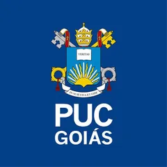

Computadores e sistemas
Implantação, configuração, manutenção e diagnóstico de falhas em hardware e software.
Engenharia de Computação aplicada à infraestrutura
Bacharelando em Engenharia de Computação e estagiário em infraestrutura de TI no Sistema OCB/GO, com foco em suporte técnico, redes e segurança da informação.
01 / Sobre mim
Sou bacharelando em Engenharia de Computação com atuação direcionada à infraestrutura de TI, suporte técnico e administração de redes corporativas. Atualmente atuo como estagiário no Sistema OCB/GO, exercendo funções N1/N2 e atividades relacionadas à infraestrutura de campo.
Trago experiência em ambiente governamental de missão crítica, com vivência em Active Directory, Microsoft 365, Windows Server, Linux, redes e serviços corporativos. Uso a base da engenharia para resolver problemas complexos, documentar soluções e apoiar uma operação confiável.
Meu princípio de trabalhoTecnologia deve gerar eficiência para as pessoas e segurança para o negócio.
02 / Consultoria independente
Atendimento de TI independente para profissionais e pequenos negócios que precisam de tecnologia confiável sem complicação.
Solicitar atendimentoImplantação, configuração, manutenção e diagnóstico de falhas em hardware e software.
Administração de redes locais, configuração de roteadores e equipamentos de rede.
Atendimento remoto ou presencial e automação de pequenas tarefas com Python.
03 / Experiência profissional
Atuação atual em infraestrutura de campo e suporte técnico, somada à experiência em ambiente governamental com redes, continuidade operacional e visão sistêmica de engenharia.
Estagiário de Infraestrutura de TI
Exerço atividades de suporte técnico, atendimento N1/N2, apoio presencial em campo, diagnóstico de incidentes e sustentação de recursos de infraestrutura para manter a operação estável e bem documentada.
Estagiário Técnico de TI
Participei da implantação do parque tecnológico da nova sede no Estádio Olímpico e atuei no suporte N1/N2, sustentação de redes LAN, WAN e Wi‑Fi, gestão de chamados e administração de acessos e políticas.
04 / Competências
Competências construídas na prática de infraestrutura, certificações profissionais e formação em Engenharia de Computação.
Gestão do ambiente de TI, ativos, sistemas operacionais e continuidade das operações.
Administração e troubleshooting de redes corporativas cabeadas e sem fio.
Administração de identidades, acessos, políticas e ferramentas de produtividade.
Atendimento N1/N2 e suporte de campo com foco em resolução de problemas, documentação e experiência do usuário.
Fundamentos de operações de segurança, governança, conscientização e gestão de riscos de TI.
Base acadêmica em desenvolvimento, bancos de dados e documentação de software.
Presença online
No LinkedIn compartilho minha trajetória profissional em engenharia e infraestrutura. No GitHub mantenho projetos pessoais e acadêmicos desenvolvidos ao longo da formação.
05 / Formação
Engenharia de Computação integra software, hardware, redes, automação e resolução estruturada de problemas aplicados à infraestrutura.

Graduação · 2023 — 2027
Pontifícia Universidade Católica de Goiás
Engenheiro de Computação pela PUC Goiás, com formação sólida em computação, matemática e eletrônica, voltada ao desenvolvimento de soluções que integram hardware, software e infraestrutura.
Ao longo do curso, desenvolvo competências em programação, estrutura e análise de algoritmos, engenharia de software, bancos de dados, redes de computadores, sistemas operacionais, inteligência artificial, criptografia, sistemas distribuídos e computação científica, além de uma base consistente em circuitos elétricos, eletrônica, microcontroladores, sistemas embarcados, automação e robótica.
A formação prática é reforçada por laboratórios especializados e projetos integradores, preparando para atuar em áreas como infraestrutura e redes, cloud, segurança da informação, sistemas embarcados, automação, engenharia de software e soluções computacionais aplicadas a diferentes setores.
Certificação profissional
Suporte, sistemas, redes e administração de TI.
Certificação profissional
Fundamentos de segurança e proteção de ambientes.
Cursos Profissionalizantes
06 / Reconhecimento
X Congresso de Ciência, Tecnologia e Inovação da PUC Goiás · 2024
Desenvolvi uma solução matemática para otimizar um sistema de ventilação em túneis de metrô, unindo modelagem, análise de cenários e um algoritmo para cálculo do volume de ar.
07 / Próximos passos
Projetar e operar ambientes disponíveis, documentados e preparados para crescer.
Aprofundar práticas de nuvem e automação para tornar operações mais simples e previsíveis.
Integrar proteção, governança e conscientização às decisões de infraestrutura.
Vamos conversar
Atuo com infraestrutura de TI, suporte técnico, redes, campo, cloud e segurança da informação — e sigo aberto a boas conexões, projetos e oportunidades de evolução profissional.